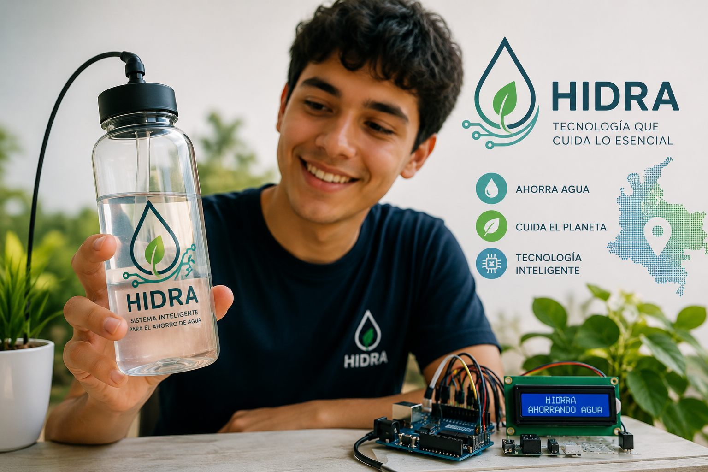

HIDRA es un sistema inteligente diseñado para contribuir al ahorro y uso responsable del agua mediante tecnología Arduino. El proyecto utiliza sensores para detectar y controlar el consumo, permitiendo automatizar el flujo de agua y reducir desperdicios.
HIDRA
Problematicas

Desperdicio
El agua se desperdicia constantemente por grifos abiertos, fugas y un uso innecesario, especialmente cuando no existe un control automático.
Impacto ambiental
El consumo excesivo de agua contribuye al agotamiento de este recurso, afectando los ecosistemas y generando la necesidad de adoptar soluciones más sostenibles.

Automatización
Muchos sistemas dependen completamente de que una persona abra y cierre manualmente el suministro, lo que puede provocar un consumo mayor al necesario.
¿A quiénes puede beneficiar HIDRA?
- Familias de bajos recursos ayudando a reducir el desperdicio y, potencialmente, el costo asociado al consumo.
- Comunidades rurales mediante sistemas que controlen automáticamente el flujo de agua.
- Instituciones educativas para evitar que grifos queden abiertos y enseñar sobre el uso responsable del agua.
- Pequeños negocios reduciendo pérdidas ocasionadas por fugas o uso innecesario.
- Comunidades indígenas especialmente en territorios donde el acceso al agua es más limitado.
- Hogares urbanos detectando situaciones de desperdicio y automatizando el suministro.
¿Por qué es importante solucionar nuestra problemática?
Es importante solucionar el desperdicio y el uso inadecuado del agua porque el agua es un recurso esencial para la vida y no es ilimitado. En Colombia, algunas comunidades presentan dificultades para acceder a este recurso, mientras que en otros lugares se desperdicia por fugas, grifos abiertos o falta de control. Con HIDRA, buscamos aprovechar la tecnología para controlar automáticamente el flujo de agua, reducir el desperdicio y promover un consumo más responsable. De esta manera, el proyecto puede contribuir al cuidado del medio ambiente y beneficiar especialmente a comunidades donde el acceso al agua es más limitado.
Nuestra solución
HIDRA propone una solución tecnológica para reducir el desperdicio de agua mediante la automatización de su flujo. El sistema utiliza sensores conectados a Arduino para detectar el uso del agua y controlar automáticamente su suministro, evitando que permanezca fluyendo cuando no es necesario. De esta manera, HIDRA busca disminuir el consumo innecesario, prevenir desperdicios y fomentar un uso más responsable y sostenible del agua.
